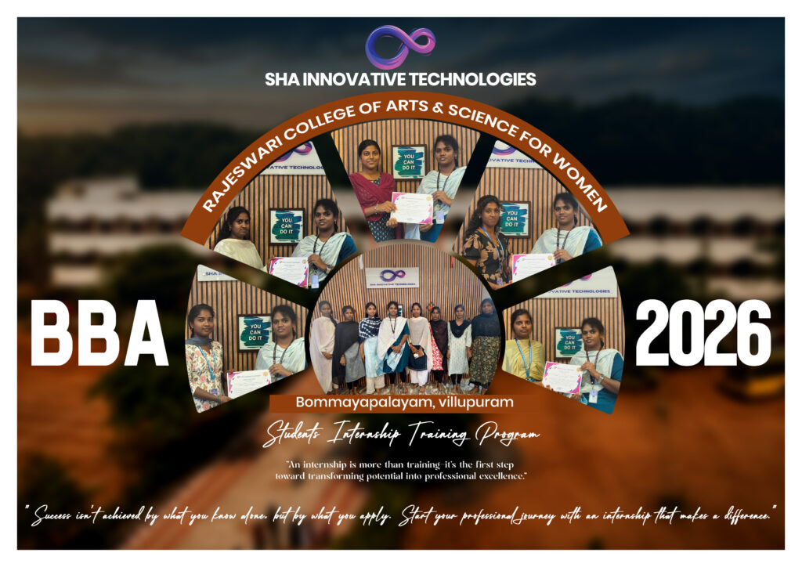
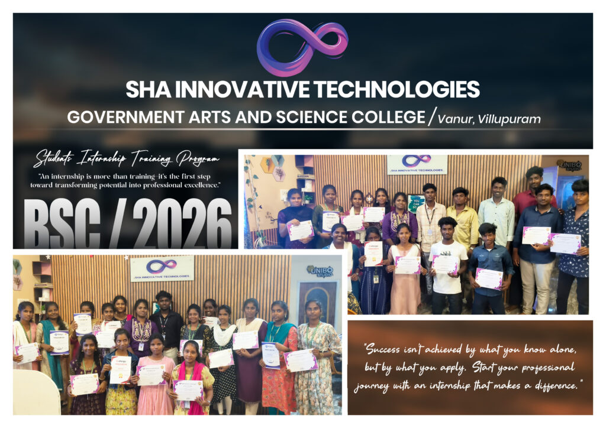
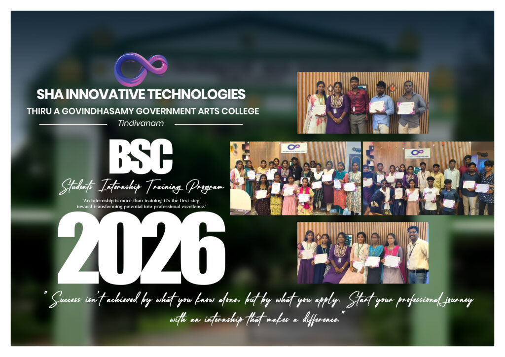
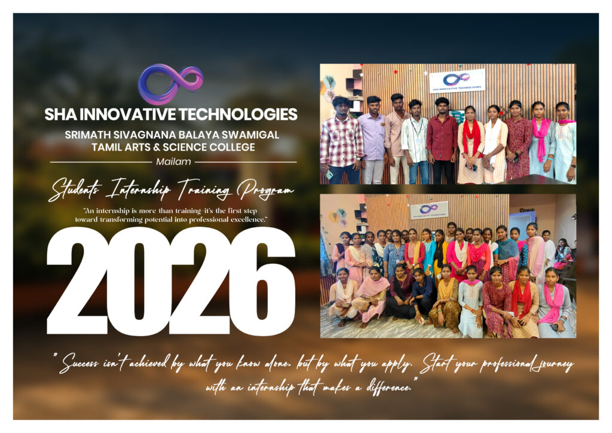
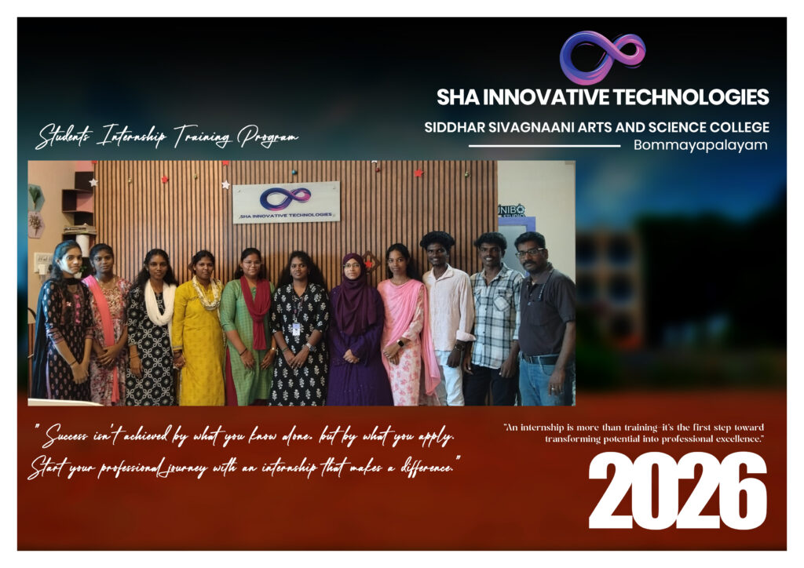
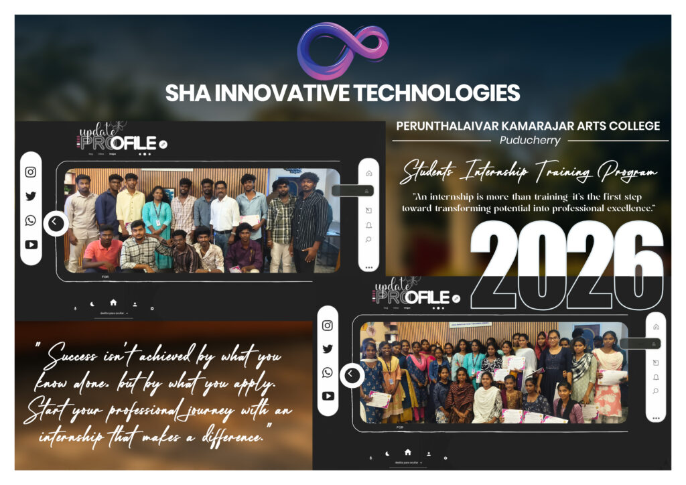
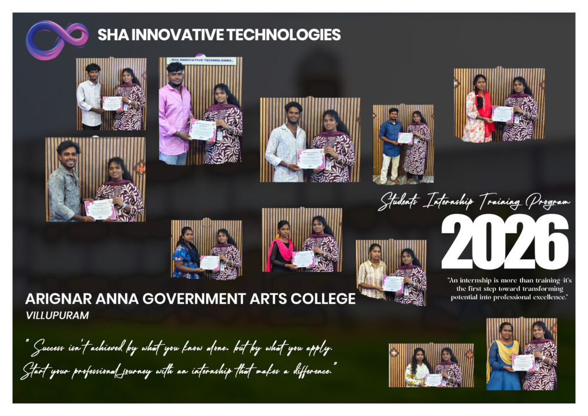
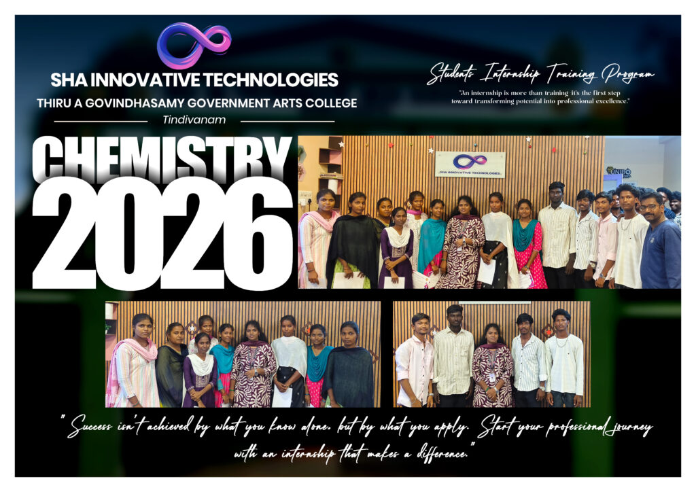
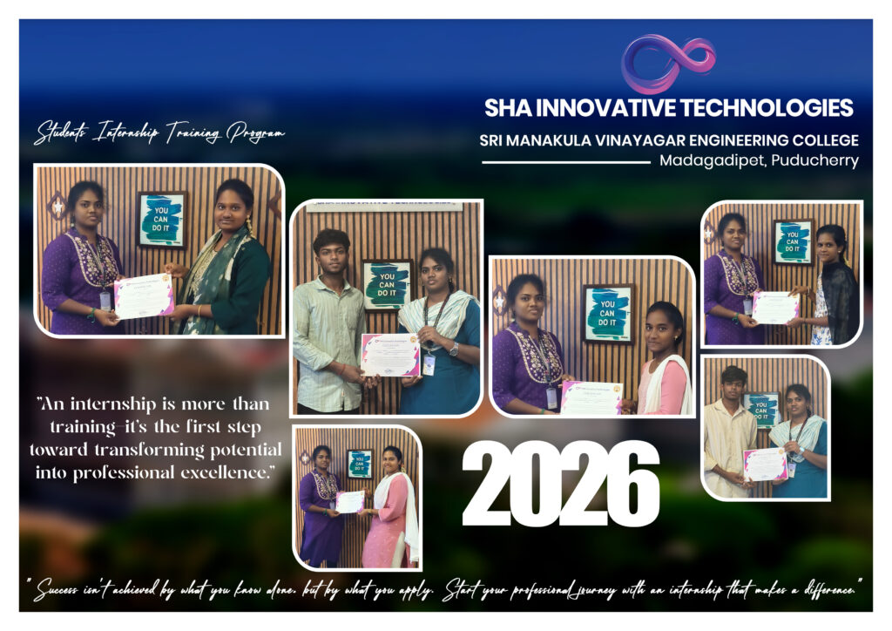
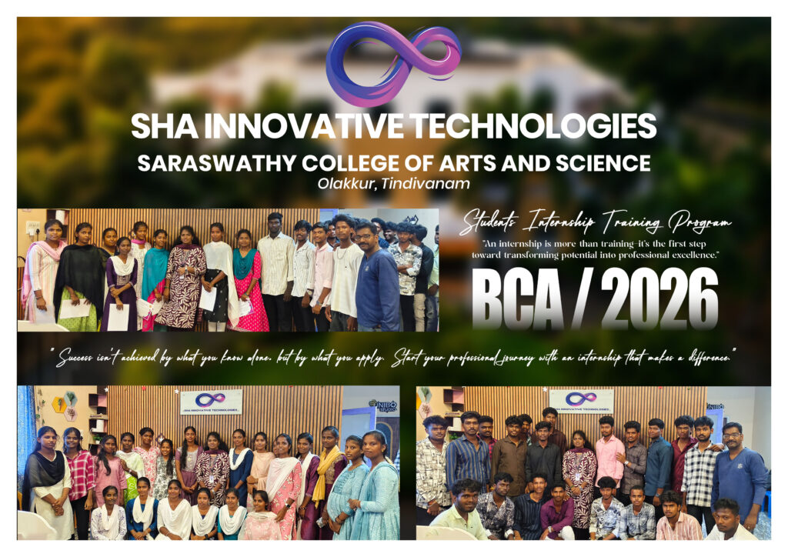

FRONTEND
Interface Implementation
Interface implementation and responsive layouts.
Develop practical exposure by working through project tasks, implementation, review, and guided technical workflows.
An internship provides the vital transition from theoretical understanding to active implementation.
Concepts, tools, technologies
Grasp core programming languages, interface structures, frameworks, and architecture fundamentals.
Project tasks and implementation
Translate requirements into functional code, design components, API endpoints, and database interactions.
Development workflow, review, problem solving
Gain exposure to real debugging cycles, feedback iteration, collaborative workflows, and structured delivery.
Focused, project-oriented domains structured around specific engineering and design workflows.
Responsive interfaces, HTML/CSS structure, semantic web architecture, and cross-browser testing.
End-to-end integration, client interfaces, server logic, and database connectivity.
Server-side endpoints, data models, business logic, and API development.
Interactive UI components, JavaScript state logic, DOM events, and modern styling.
Server architecture, API creation, authentication flows, and structured data handling.
Wireframing, interactive prototyping, usability principles, and component design systems.
Schema design, relational queries, CRUD operations, and persistent storage workflows.
SEO audits, content structuring, performance metrics, and digital campaign analytics.
Integrating modern AI APIs, structured prompting workflows, and technical assistance tools.
A distinctive 6-step project timeline mirroring standard industry engineering execution.
Understand the project and requirements.
Break the work into practical tasks.
Implement the assigned features or components.
Review functionality and identify issues.
Improve the implementation based on feedback.
Finalize and document the practical work.
Functional responsibilities and practical tasks encountered during project execution.
Interface implementation and responsive layouts.
Application logic, APIs, and server-side functionality.
Data modelling, integration, and CRUD workflows.
Wireframes, interface structure, and usability refinement.
Debugging, validation, and issue resolution.
Project notes, technical documentation, and handover preparation.
A balanced development experience combining technical execution with essential workplace habits.
A linear progression of milestones representing real engineering execution.
Complementary pathways designed to guide your growth at each stage of your technology journey.
Open to motivated candidates seeking project-based exposure.
Building practical skills alongside academics.
Completing academic project requirements.
Strengthening development confidence.
Applying code to real software tasks.
Creating usable design systems and layouts.
Students from different educational institutions have participated in SHA Innovative Technologies' internship training programs, gaining practical exposure and experience through structured learning and real-world project environments.










Institutions can connect with SHA Innovative Technologies to discuss internship opportunities, practical project exposure, workshops, and related technology programs.
Helpful answers to common questions regarding technology internships, project exposure, and guidance.
Students, pre-final and final-year learners, recent graduates, and aspiring developers or designers looking to gain practical project exposure can enquire.
Available project domains include Web Development, Full Stack, Python & Django, Frontend, Backend, UI/UX Design, Database Applications, Digital Marketing, and AI Fundamentals.
Yes. Internships focus directly on practical tasks, component development, and understanding project execution workflows.
Depending on the domain, practical work involves interface coding, backend endpoints, database queries, design wireframes, debugging, testing, or documentation.
Yes. Learners receive structured direction, code feedback, and milestone reviews throughout their internship work.
Yes. Final-year students seeking practical project implementation aligned with academic learning can discuss requirements during enquiry.
Yes. Educational institutions and departments can collaborate with SHA on structured student internship initiatives and practical programs.
Submit an enquiry via our website form, email us at shainnovativetechnologieshr01@gmail.com, or call +91 93444 40310.
Discuss your technology interests, project goals, and internship requirements with SHA Innovative Technologies.